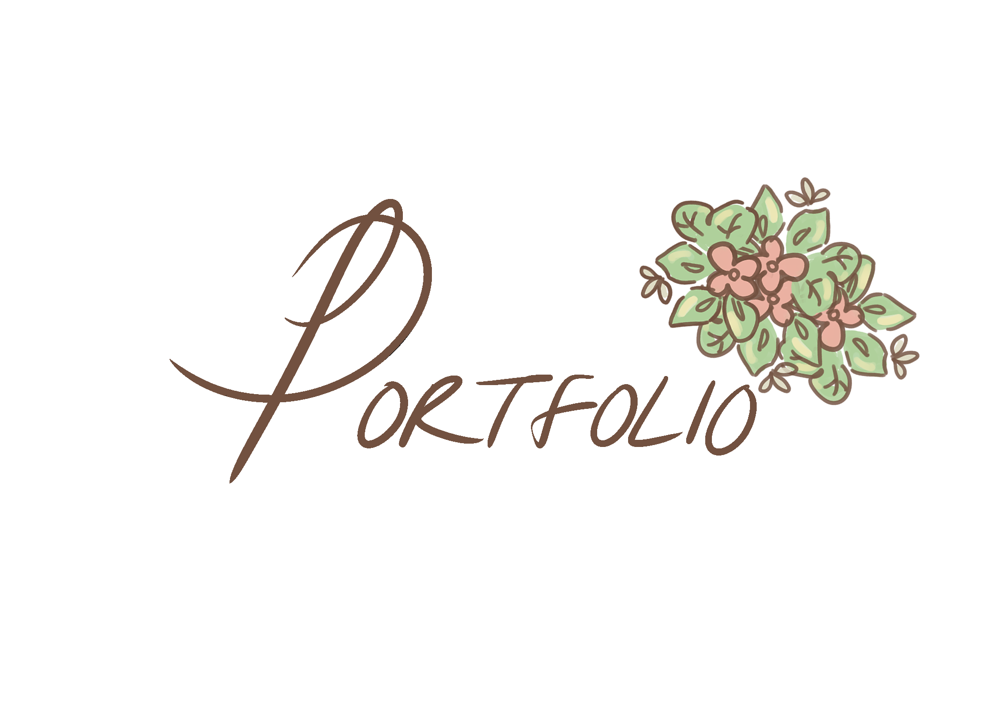

Home
Portfolio
About Me

This is my Portfolio Page!
This is my PLTW 1.1.9 Project! My partner and I made a moving illustration of a duck pond that has moving ducks and turtles in it.
We created custom classes and definitions within our project in order to streamline efficiency as well as created a suite of custom turtle stamps! We utilized primarily the
python turtle commands in order to illustrate and create our project. For the pixel art, we used piksel!